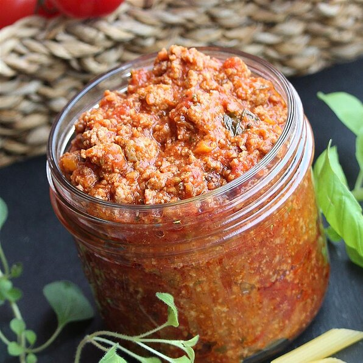

Mama Palomba's Spaghetti Sauce

Description
Rich spaghetti sauce made with ground beef and sausages
Ingredients
- 2 (28 ounce) cans plum tomato puree
- ½ pound hot Italian sausage, sliced into bite-sized pieces
- ½ pound mild Italian sausage, sliced into bite-sized pieces
- 2 pound ground chuck
Steps
- Brown ground chuck meat on medium heat
- Add hot and mild sausage and cook for a further 5 minutes
- Add tomato puree and bring to a light boil
- Reduce heat and simmer for 45 minutes